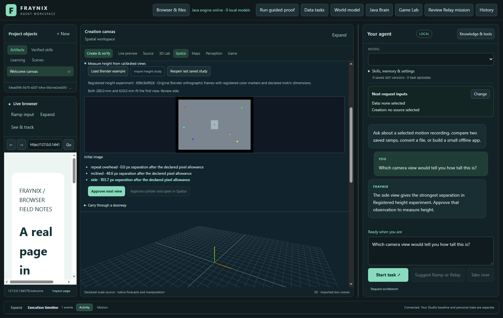
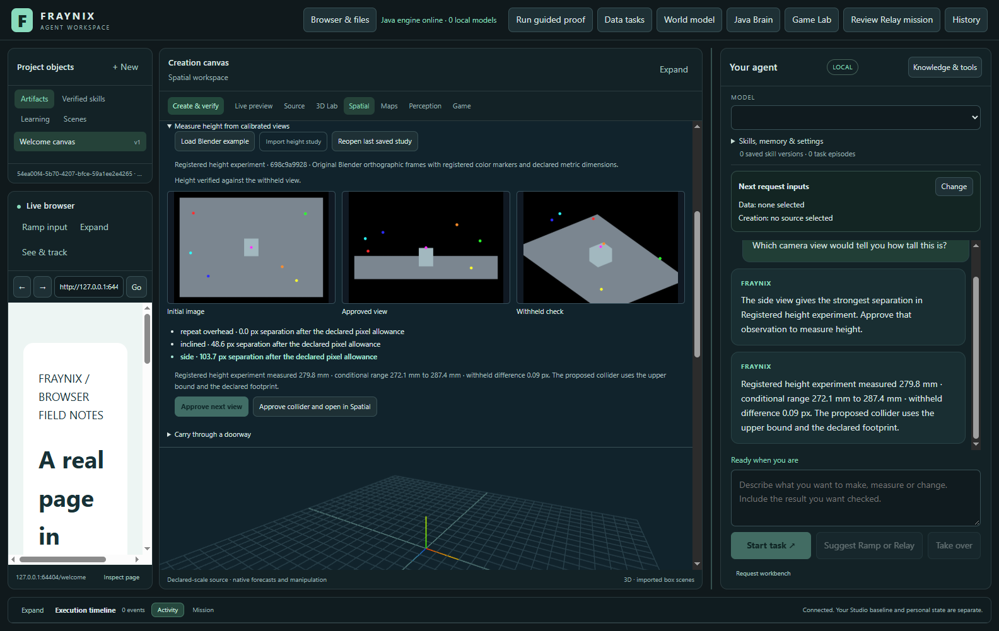
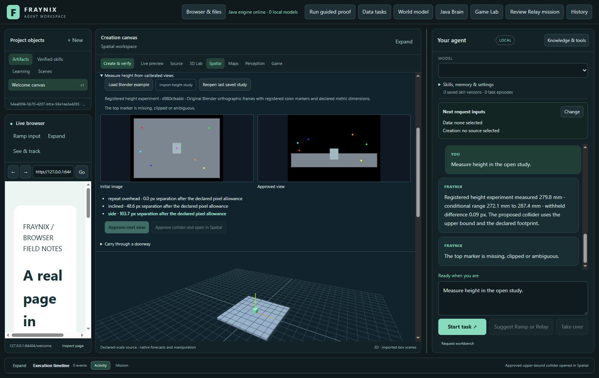

Choose a calibrated view to measure height
Rank camera views, verify a height from independent images, and review the upper-bound collider.
Both Blender measurements agreed within 0.6 mm with the reference mesh. A hidden target caused a refusal.

Both heights fit overhead and the side view ranks highest

The selected and withheld views agree on a conditional height

The missing target marker prevents collider approval
System files
Open source